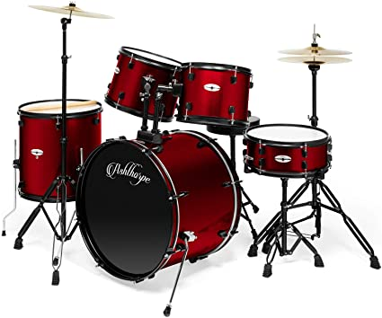
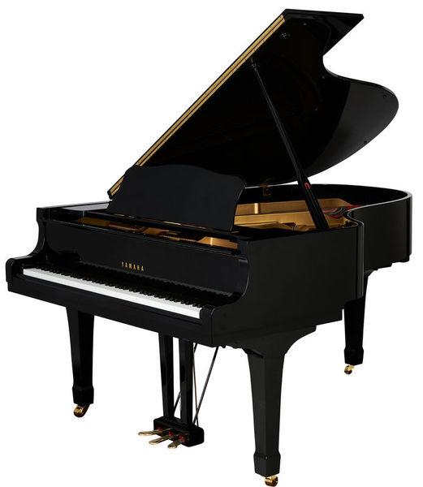

Guitar

The guitar is a fretted musical instrument that typically has six strings.
Drums
The drum is a member of the percussion group of musical instruments.
Piano
The piano is an acoustic, stringed musical instrument. It is played using a keyboard.